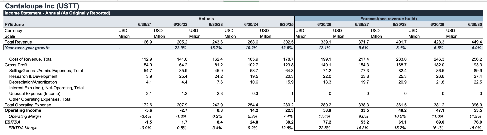
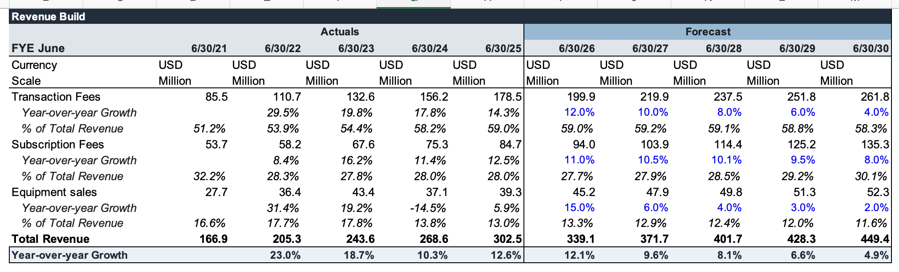
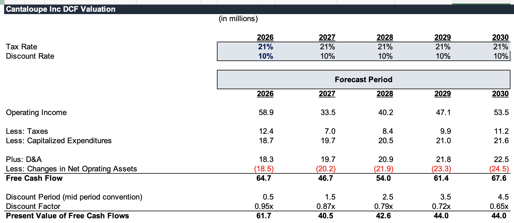

365 Retail Markets / Cantaloupe
365 Retail Markets acquired Cantaloupe in May of this year, advised by William Blair. 365 Retail Markets is a portfolio company of Providence Equity, a PE firm which lists tech as one of its sector specialties. Cantaloupe was a public company when it was acquired. This seems like a classic horizontal acquisition, as both 365 Retail and Cantaloupe are leaders in retail technology, like self-checkout kiosks, payment processing, and sales intelligence.
The purchase price was $848 million at $11.20 per share. I’m interested to see whether Cantaloupe’s cash generation alone can justify the $848M purchasing price, or if the valuation requires meaningful operating synergies. In order to test this, I will be creating a DCF model of Cantaloupe. Part of the reason I chose this transaction is that Cantaloupe was public, and so financials are available to me.
Unfortunately I am not currently in Utah, and therefore cannot use the University of Utah Bloomberg terminal to pay data. Luckily, the library gives us access to Mergent, a database that had the last 5 years of Cantaloupe financials. After doing some filtering, I exported Cantaloupe’s financials as a CSV into Excel. After doing some data cleanup, I was able to project 5 years of Cantaloupe’s data.

The rationale for my projections follows. I forecast 13.5% growth in 2026, fading gradually until 5.0%. I expect both hardware and software to be major sales of Cantaloupe initially, with growth gradually slowing to 5.0% by 2030 as the company becomes larger and more mature. I expect modest benefits of scale, hence the increase in gross margin. D&A and CapEx also decline as a percentage of total revenue, due to the same reason as revenue growth. Finally, standard EBITDA should rise, as operating leverage increases.

I calculated the Cost of Revenue/EBITDA/CapEx as a percent of total revenue. Projecting revenue can be found in the next tab, where I found three components of total revenue: transaction fees, subscription fees, and equipment sales. I expect transaction fees, which already sit at 60% of company revenue, to slow over the years as the revenue base increases. Subscription revenue remains the fastest-growing segment, as it is one of the few recurring services Cantaloupe can tap into once the company matures. Finally, equipment sales tapers off massively as they are less recurring and lower margin. Equipment sales have been historically volatile for the company in the past.
Using a discount rate of 10% and federal tax rate of 21%, I was able to project a free cash flow of 67.6M in 2030. At a 3.0% growth rate, this implies an enterprise value of $827.7M. Factoring in cash/debt/preferred stock, Cantaloupe’s equity value is $818.8M with an implied share price of $10.9. This is approximately $29M less than the actual purchase price.


This implies that Cantaloupe was acquired at a slight premium. This makes sense, given potential operating synergies between the two companies, including overlapping technology platforms and customer relationships. Furthermore, opportunities to cross-sell services across their customer bases could benefit 365 Retail Markets massively.
Although cash flow can come close to justifying the price tag on Cantaloupe, the acquisition gave 365 a larger customer base and stronger exposure to other parts of the market, especially vending machines. The combined company could market the same retail technology product family across different markets. From a PE angle, Providence Equity is likely seeking to build a larger technology platform and acquire a direct competitor to expand market share.
There are some reasons to be wary about the premium paid. For one, 10% is relatively favorable: if their true WACC is higher, their present values could fall to make the transaction look too expensive. Equipment sales represent another uncertainty, as it is hard to predict the volatile nature of equipment sales, especially when they aren’t recurring. Finally, my DCF does not include synergies. The fact that the implied share price of $10.90 is only slightly below $11.20, the offer price, suggests the transaction did not require aggressive synergy assumptions. However, cash flow alone is not enough: greater scale, cost savings, and cross-selling opportunities will still have to occur for 365 Retail Markets to earn an adequate return on its investment.